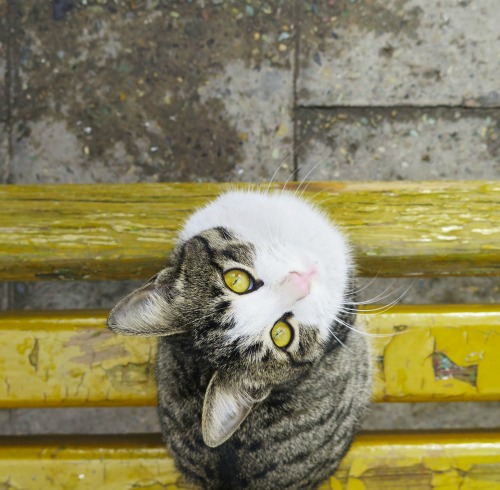

I don't know how it happened but one day a snow lepord followed me home. For those who are unfamiliar with snow leapords, or think they may have had the same expeirence, here are a few ways to identify a snow lepord:
these are pictures of my past cats:
